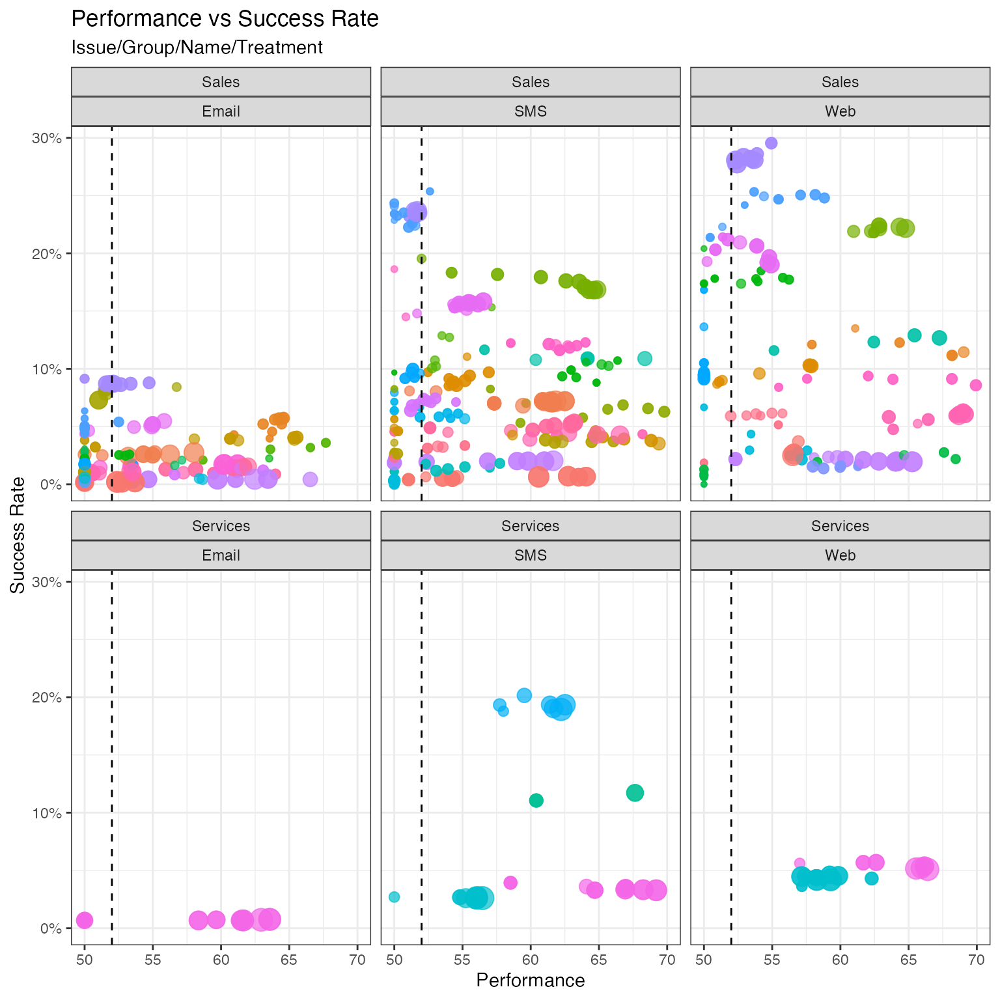
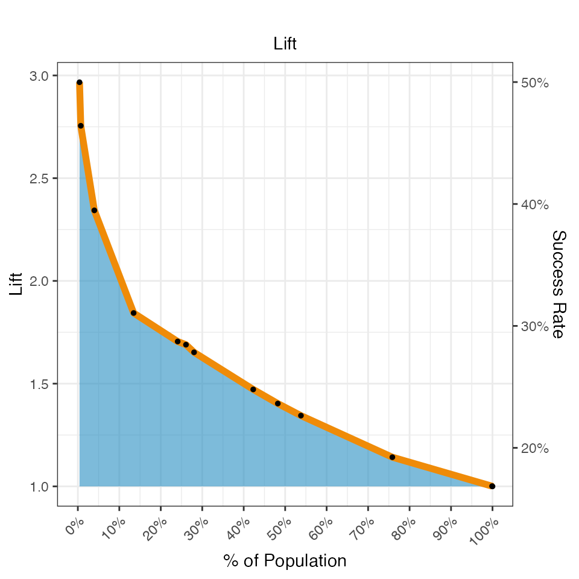

adm-datamart.RmdThe ADM Datamart is an open database schema where the ADM models and all predictors are copied into. The standard ADM reports both in Analytics Center as well as in the Report Browser (Adaptive category) work off this schema.
Since the schema is open we can easily use it to create our own reports and support measurements and plots not available in the OOTB reporting in Pega.
Let’s first load the data. An example export is provided with the package. Ways to load your own data from the database or from a dataset export will be described later.
library(pdstools)
# include below when developing the library
# invisible(sapply(list.files("~/Documents/pega/cdh-datascientist-tools/r/R", "*.R", full.names = T), source))
data(adm_datamart)To load your own data, export the datasets from Pega, download them
to your filesystem and let the pdstools library import
it.
The ADMDatamart function is a very generic function to
read the model and optionally predictor data into a simple list
structure that is universally used by the pdstools
functions. The most basic usage is to only give it a folder location
where you downloaded the dataset exports, but it supports different file
types and allows for filtering etc.
adm_datamart <- ADMDatamart("~/Downloads")With the data loaded, we can start with a plot similar to what the Analytics Center provides OOTB, however here we have more flexibility to slice & dice.
plotPerformanceSuccessRateBubbleChart(adm_datamart, facets = c("Issue", "Channel")) +
scale_x_continuous(limits = c(50, 70), name = "Performance") +
geom_vline(xintercept=c(52,90), linetype="dashed")
We can zoom in into the performance and success rates of the various channels. Here you see that success rates for e-mail are low, as is the average model performance.
plotPerformanceSuccessRateBoxPlot(adm_datamart, "Channel") +
scale_x_continuous(limits = c(50, 70), name = "Performance") + coord_flip() +
scale_color_discrete_qualitative(palette="Harmonic")# Predictors
Showing the overall predictor contributions to the models.
Here we “facet” by model rule (ConfigurationName) but you can also leave this out or facet by e.g. Channel or Issue.
plotPredictorImportance(adm_datamart, limit = 30)You can also show the predictor performance in one plot across all predictors for all the selected models. Also arranging by performance in both dimensions gives a quick visual clue of which predictors and which models need attention.
plotPredictorImportanceHeatmap(adm_datamart,
aggregation="Name", limit = 30) +
theme(axis.text.y = element_text(size=6),
axis.text.x = element_text(size=6, angle = 45, hjust = 1))With all the data available in the datamart, you are not restricted to just reporting. Using the binning information for all of the predictors, you could, for example, calculate the KS score of the models. The KS (Kolmogorov–Smirnov) score is related to the AUC that we use by default, but instead of the areas under the ROC curve, it gives the maximum separation between the true positive and false positive rate.
The below snippet calculates the KS score for all predictors of all propositions and shows them next to AUC reported by ADM.
adm_datamart_binning_latest <- filterLatestSnapshotOnly(adm_datamart$predictordata)
setorder(adm_datamart_binning_latest, Propensity)
myKS <- function(binning)
{
Goods <- cumsum(binning$BinNegatives) / sum(binning$BinNegatives)
Bads <- cumsum(binning$BinPositives) / sum(binning$BinPositives)
KS <- (max(Goods - Bads))
return(ifelse(is.na(KS),0,KS))
}
performanceSummary <-
left_join(adm_datamart_binning_latest[, list(KS = myKS(.SD),
auc = first(Performance)),
by=c("ModelID", "PredictorName","EntryType")],
filterLatestSnapshotOnly(adm_datamart$modeldata),
by = c("ModelID"))
## Show KS numbers
ggplot(performanceSummary[KS > 0.01],
aes(paste(Channel,Name,sep = "/"), factor(PredictorName,
levels=c(setdiff(sort(performanceSummary$PredictorName,decreasing = T), "Classifier"),"Classifier"))))+
geom_raster(aes(fill=(EntryType=="Classifier")))+
labs(x="",y="",title="Kolmogorov–Smirnov scores")+
geom_text(aes(label=sprintf("%.2f%%",100*KS)), size=2)+
scale_fill_brewer(palette="Spectral")+
guides(fill="none")+
theme(axis.text.x = element_text(size=6, angle = 45, hjust = 1),
axis.text.y = element_text(size=6))In the product models are represented by a score distribution plot like below
model <- adm_datamart_binning_latest[ModelID %in% filterLatestSnapshotOnly(adm_datamart$modeldata)[Name=="FirstMortgage"]$ModelID]
plotBinning(filterClassifierOnly(model)) +
ggtitle(paste(unique(model$Name), collapse=","), subtitle = "Classifier")The same data can be represented as a cumulative gains chart, which indicates the percentage of positive responses as a function of the size of the population targeted.
plotCumulativeGains (filterClassifierOnly(model)) +
ggtitle(paste(unique(model$Name), collapse=","), subtitle = "Cumulative Gains")A similar view is given by the cumulative lift graphs. This gives insight into what percentage of the customers should be targeted by the models to achieve a certain lift in response rates. Both plots are included in the off-line model reports.
plotCumulativeLift (filterClassifierOnly(model)) +
ggtitle(paste(unique(model$Name), collapse=","), subtitle = "Lift")
Out of the box, model data is stored over time. This allows trend charts to be created for the performance of models.
The below plots nicely show how the models ramp up over the course of a few hours. We aggregate up to Group level to avoid having too many lines in the plot.
plotPerformanceOverTime(adm_datamart, aggregation = c("Issue", "Group"), facets = "Channel")All the plotting functions are fairly straightforward and built on ggplot and data.table. When there is no standard supporting plot function, it is easy enough to write your own. For example, to show the performance of the Age predictor over time and across all models.
predictorPerformanceTrend <- adm_datamart$predictordata[startsWith(as.character(PredictorName), "Customer.A") & BinIndex == 1,
list(AUC = mean(AUC)),
by=c("SnapshotTime","PredictorName")]
ggplot(predictorPerformanceTrend, aes(SnapshotTime, AUC, color=PredictorName)) +
geom_line(size=1) +
ggtitle("Performance over Time")
#> Warning: Using `size` aesthetic for lines was deprecated in ggplot2 3.4.0.
#> ℹ Please use `linewidth` instead.
#> This warning is displayed once every 8 hours.
#> Call `lifecycle::last_lifecycle_warnings()` to see where this warning was
#> generated.With the detailed binning information available over time, we can show how the binning of a predictor evolves. You see that the number of bins grows as more data becomes available. You also see that this predictor isn’t always active (grey instead of blue).
binningOverTime <- adm_datamart$predictordata[PredictorName=="Customer.Age" & ModelID == model$ModelID[1]]
grid.arrange(grobs = lapply(sort(unique(binningOverTime$SnapshotTime)), function(t) {
plotBinning(binningOverTime[SnapshotTime==t]) +
ggtitle(t)}))